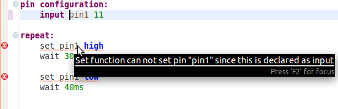
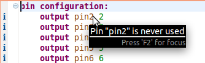
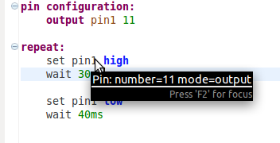
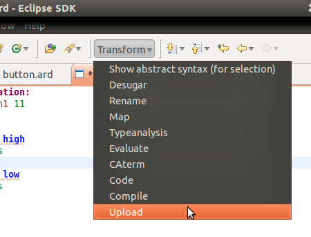
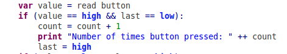
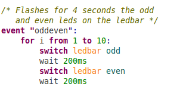
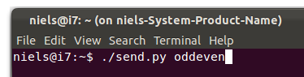
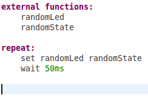
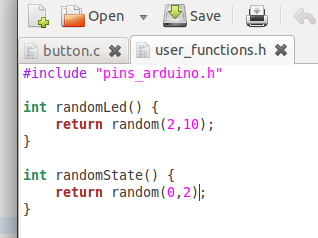

Niels Egberts (mail@nielsegberts.nl)
Oskar van Rest (oskarvanrest@gmail.com)
Wouter van Koppen (w.p.vankoppen@student.tudelft.nl)
Niels Egberts (github@nielsegberts.nl)
The Ardlang language is a language specifically tailored for the Arduino. The Arduino is an open-source electronics prototyping platform based on flexible, easy-to-use hardware and software. It's intended for artists, designers, hobbyists, and anyone interested in creating interactive objects or environments.

Arduino already comes with its own language, a subset of C++, but a language specifically build for the Arduino has many advantages like:
pin configuration:
output pin1 13
repeat:
set pin1 high
wait 200ms
set pin1 low
wait 200ms
Some of the features will be highlighted in the next sections. This list is however not exhaustive, but an indication of what Ardlang can do.
In the current language for the Arduino the error messages can be very cryptic for new programmers as they will have to decipher the GCC error messages. The Adlang compiler can give better messages and can check for more things, like if a pin is used correctly as an input/output.
  For initialisation or things that only have to be once do-once blocks can be used. Repeat blocks will be executed as much as possible. Currently repeat blocks are not executed concurrently.
The Ardlang code can be uploaded to the board directly from Eclipse.
With the print statement it is very easy to send strings and integers over the USB-cable to the computer. With a provided python file these messages can be received. 
With event blocks its possible to call these blocks from a computer. The board will listen once in a while for a message and will execute the corresponding code block. It will buffer received messages if another event block is still running from a previous call.
 Pulse-width modulation can be directly accessed by using percentages. When setting a pin at 10% the pin will be high 10% of the time. Can for example also be used to control the speed of motors.

With the external functions configuration blocks the user can call most of the functions provided by the C standard library and the Arduino library. The user can also define its own C functions in the file user_functions.h . This way its possible to do everything the Arduino is capable of, even if the Ardlang language is not feature complete.
 You can download this project in either zip or tar formats.
You can also clone the project with Git by running:
$ git clone git://github.com/nielsegberts/Ardlang